Contents
function AGuideToTheFFT_odd()
close all
Symmetric Time Domain
Bx = 10;
A = sqrt(log(2))/(2*pi*Bx);
fs = 500;
dt = 1/fs;
T=1;
t = -T/2:dt:T/2;
disp(sprintf(' Symmetric case: length(t) = %4d points',length(t)));
df = 1/T;
Fmax = 1/2/dt;
f=-Fmax:df:Fmax;
taun = 0.055;
x = exp(-t.^2/2/A^2);
Xan = A*sqrt(2*pi)*exp(-2*pi^2*f.^2*A^2);
X = dt * fftshift(fft(fftshift(x)));
Xbad = dt * fftshift(fft(x));
ifftx = fs * ifftshift(ifft(ifftshift(X)));
esp = exp(-j * 2 * pi * f * taun);
Xshift = X .*esp;
Xanshift = Xan .* esp;
ifftxshift = fs * ifftshift(ifft(ifftshift(Xshift)));
Symmetric case: length(t) = 501 points
Graphical output
Fig.1
figure(1);
plot(f,real(Xbad))
xlabel('Frequency [Hz]');
ylabel('fft()');
axis([-50 50 -0.04 0.04])
grid;
snapnow;
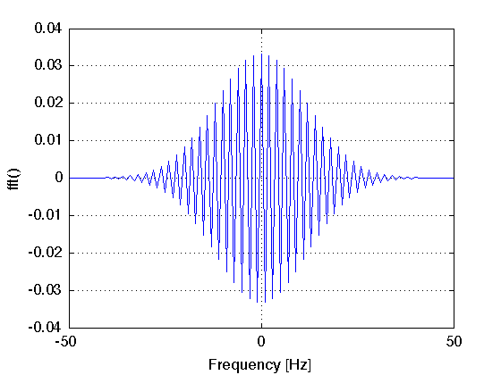
Fig.2
figure(2);
subplot(2,1,2);
plot(t,x,'k');
xlabel('Time [s]');
ylabel('x(t)');
axis([-0.1 0.1 0 1])
grid
subplot(2,1,1);
plot(f,Xan,'k');
xlabel('Frequency [Hz]');
ylabel('X(f)');
axis([-250 250 0 0.04])
grid;
snapnow;
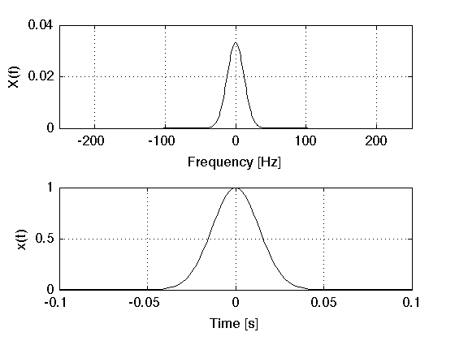
Fig.3
figure(3);
plot(f,20*log10(Xan/(A*sqrt(2*pi))),'k');hold on;
xlabel('Frequency [Hz]');
ylabel('|X(f)| [dB]');
plot([+Bx +Bx],[-10 -3],'r');
plot([-Bx -Bx],[-10 -3],'r');
plot([-Bx +Bx],[-3 -3],'r');
h=text(-1.7, -2.6, '2B_x','fontweight','bold','fontangle','italic');
axis([-50 50 -10 0]);
grid
snapnow;
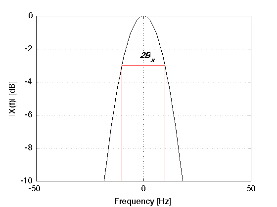
Fig.4
figure(4);
subplot(2,1,1)
plot(f,real(X),'k'); hold on
plot(f,Xan,'r--');
xlabel('Frequency [Hz]');
ylabel('X(f)');
legend('Num.','Ana.');
axis([-250 250 0 0.04])
grid
subplot(2,1,2)
plot(t,real(ifftx),'k'); hold on
plot(t,x,'r--');
xlabel('Time [s]');
ylabel('x(t)');
legend('Num.','Ana.');
axis([-0.1 0.1 0 1]);
grid
snapnow;
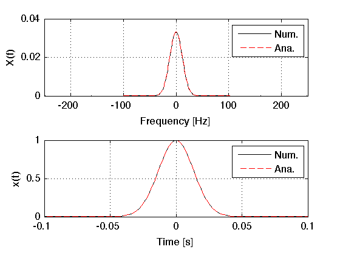
Fig.5
figure(5);
subplot(2,1,1);
plot(f,real(Xshift),'k'); hold on
plot(f,real(Xanshift),'r--');
title('X(f) exp(-j2 \pi f \tau_{n})');
legend('Re[Num.]','Re[Ana.]');
grid;
hold off
subplot(2,1,2);
plot(f,imag(Xshift),'k-'); hold on
plot(f,imag(Xanshift),'r--');
legend('Im[Num.]','Im[Ana.]');
grid;
xlabel('Frequency [Hz]');
snapnow;
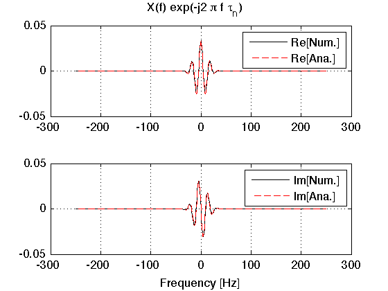
Fig.6
figure(6);
plot(t(1),real(ifftxshift(1)),'r',t,x,'k--',t,real(ifftxshift),'k');hold on
xlabel('Time [s]');
ylabel('x(t - \tau_{n})');
plot([taun taun],[0 1],'r');
legend(['\tau_n = 0.055s = ' num2str(taun/dt,3) 'dt']);
grid;
axis([-0.1 0.3 0 1]);
snapnow;

Asymmetric Time Domain
ui = complex(0,1);
Bx = 5;
A = 2*pi*Bx/sqrt(sqrt(2)-1);
fs = 500;
dt = 1/fs;
T = 3;
t = 0:dt:T;
disp(sprintf('Asymmetric case: length(t) = %4d points',length(t)));
df = 1/T;
Fmax = 1/2/dt;
f=-Fmax:df:Fmax;
taun = 0.055;
x = A*t.*exp(-A*t);
Xan = A./(A+ui*2*pi.*f).^2;
X = dt * fftshift(fft(x));
ifftx = fs *ifft(ifftshift(X));
esp = exp(-j * 2 * pi * f * taun);
Xshift = X .*esp;
Xanshift = Xan .* esp;
ifftxshift = fs * ifft(ifftshift(Xshift));
Asymmetric case: length(t) = 1501 points
Graphical output
Fig.7
figure(7);
subplot(2,1,2)
plot(t,x,'k');
xlabel('Time [s]');
ylabel('x(t)');
grid
subplot(2,1,1)
[AX,H1,H2] = plotyy(f,real(Xan),f,imag(Xan),'plot');
set(get(AX(1),'Ylabel'),'String','Re[X(f)]');
set(get(AX(2),'Ylabel'),'String','Im[X(f)]');
set(AX(1),'Ycolor','k');
set(AX(2),'Ycolor','r');
set(H1,'Color','k')
set(H2,'Color','r')
grid;
title('X(f)');
xlabel('Frequency [Hz]')
snapnow;
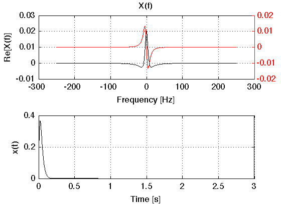
Fig.8
figure(8);
plot(f,20*log10(abs(Xan)*A),'k');hold on;
xlabel('Frequency [Hz]');
ylabel('Amplitude [dB]');
plot([+Bx +Bx],[-10 -3],'r');
plot([-Bx -Bx],[-10 -3],'r');
plot([-Bx +Bx],[-3 -3],'r');
text(-1.7, -2.6, '2B_x','fontweight','bold','fontangle','italic');
axis([-50 50 -10 0]);
grid
snapnow;
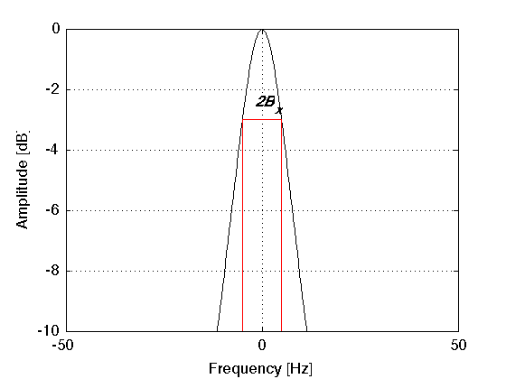
Fig.9
figure(9);
subplot(3,1,1);
plot(f,real(X),'k'); hold on
plot(f,real(Xan),'r--');
ylabel('Re[X(f)]');
legend('Num.','Ana.');
grid
subplot(3,1,2);
plot(f,imag(X),'k'); hold on
plot(f,imag(Xan),'r--');
xlabel('Frequency [Hz]');
ylabel('Im[X(f)]');
legend('Num.','Ana.');
grid
subplot(3,1,3);
plot(t,real(ifftx),'k'); hold on
plot(t,real(x),'r--');
xlabel('Time [s]');
ylabel('x(t)');
legend('Num.','Ana.');
grid
snapnow;
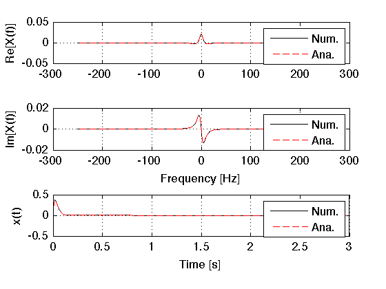
Fig.10
figure(10);
subplot(2,1,1);
plot(f,real(Xshift),'k'); hold on
plot(f,real(Xanshift),'r--');
title('X(f) exp(-j2 \pi f \tau_{n})');
legend('Re[Num.]','Re[Ana.]');
grid;
hold off
subplot(2,1,2);
plot(f,imag(Xshift),'k'); hold on
plot(f,imag(Xanshift),'r--');
legend('Im[Num.]','Im[Ana.]');
grid;
xlabel('Frequency [Hz]');
snapnow;
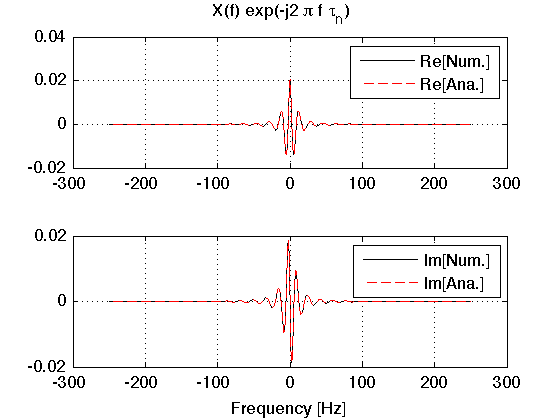
Fig.11
figure(11);
plot(t(1),real(ifftxshift(1)),'r',t,x,'k--',t,real(ifftxshift),'k');hold on
xlabel('Time [s]');
ylabel('x(t - \tau_{n})');
plot([taun taun],[0 1],'r');
legend(['\tau_n = 0.055s = ' num2str(taun/dt,3) 'dt']);
grid;
axis([-0.1 0.2 0 0.4]);
snapnow;
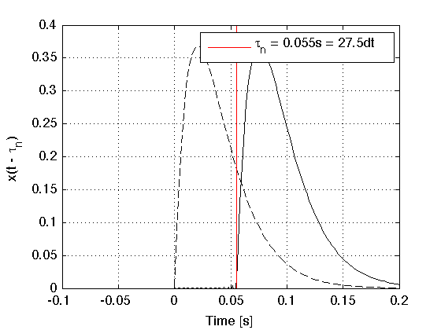
Periodic function
f0 = 50;
fs = 5000;
dt = 1/fs;
T=1;
t = -T/2:dt:T/2;
disp(sprintf(' Periodic case: length(t) = %4d points',length(t)));
df = 1/T;
Fmax = 1/2/dt;
f=-Fmax:df:Fmax;
x = cos(2*pi*f0*t)+10;
X = fftshift(fft(fftshift(x)))/length(x);
ifftx = fs * ifftshift(ifft(ifftshift(X)));
Periodic case: length(t) = 5001 points
Graphical output
Fig.12
figure(12);
plot(t,x,'k');
xlabel('Time [s]');
ylabel('x(t)');
grid
snapnow;
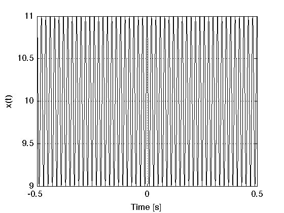
Fig.13
figure(13);
plot(f,real(X),'r');
ylabel('X(f)');
xlabel('Frequency [Hz]');
grid
snapnow;
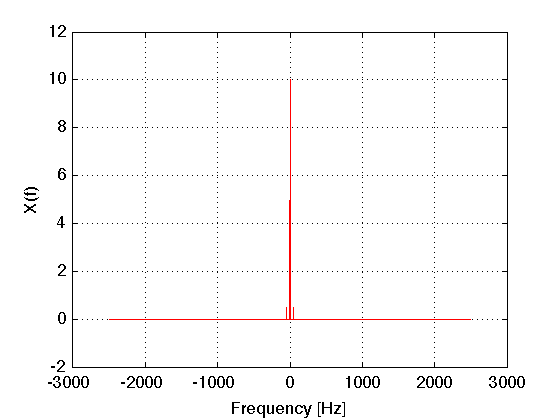
Fig.14
figure(14);
plot(t,real(ifftx))
grid
ylabel('x(t)=FFT^{-1}[X(f)]');
xlabel('time [s]');
snapnow;
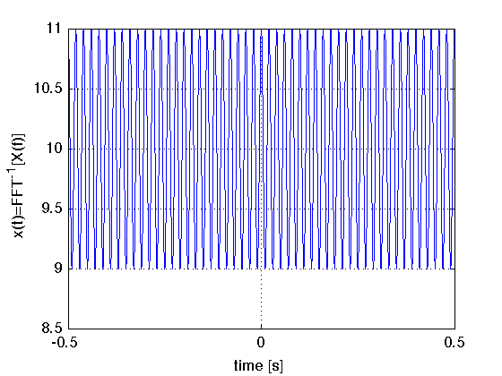
end